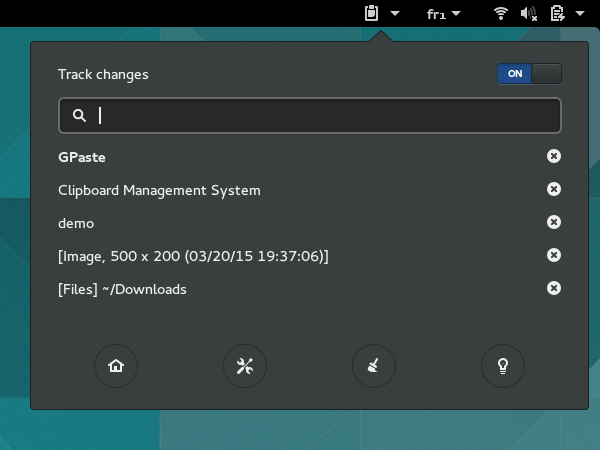
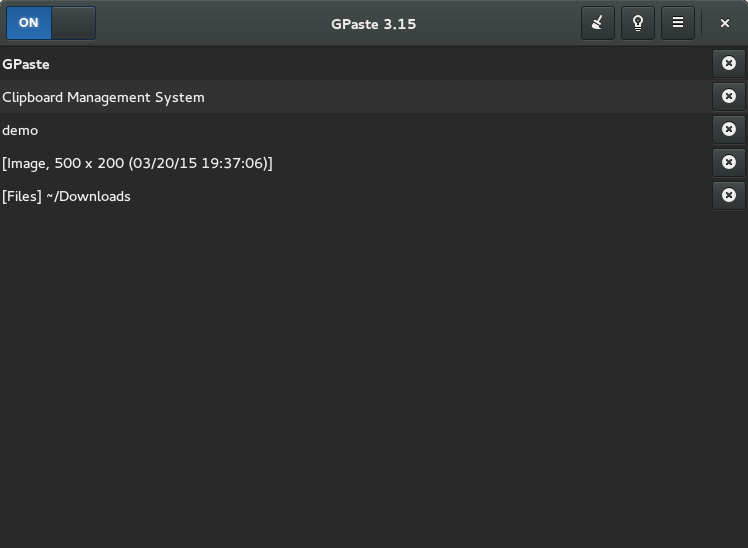
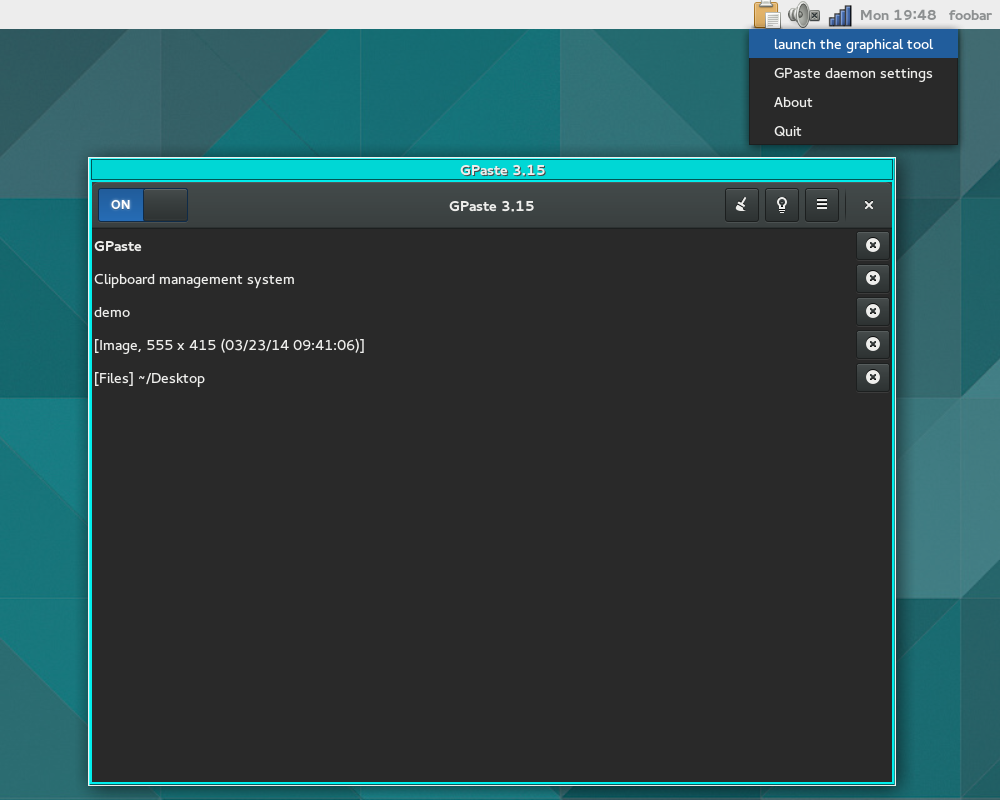
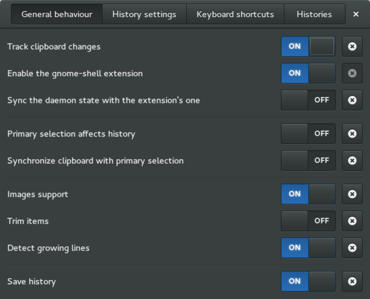
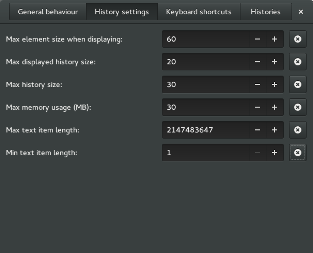
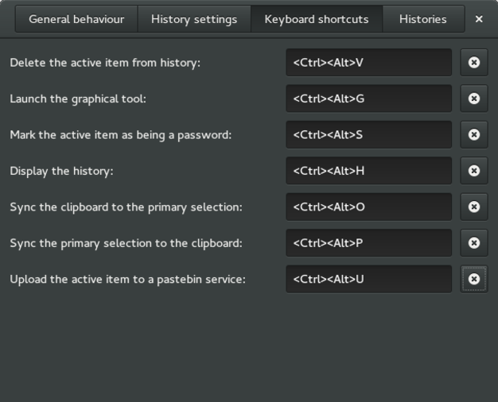
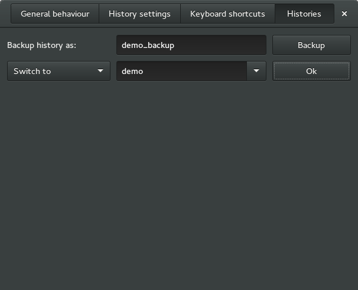

GPaste 3.16 released
by Marc-Antoine Perennou on March 23, 2015
It’s available there, get it while it’s hot!
This release is the first release for using with with GNOME 3.16 with a lot of new features and cleanup.
Excluding translations: 203 files changed, 4487 insertions(+), 5424 deletions(-)
What’s new?
- new subcommand: gpaste merge to merge various entries (with –decoration and –separator)
- new tool: gpaste-ui (minimal graphical interface)
- legacy applet reworked to use gpaste ui
- ubuntu app indicator reworked to use gpaste ui
- new keybinding to launch gpaste ui
- new keybinding to upload clipboard content to a pastebin service (requires wgetpaste >= 2.26)
- the daemon now returns standard DBus errors on invalid input
- name dbus parameters
- gnome-shell 3.16 support (require gnome-shell 3.16 because of breaking changes)
- require glib 2.44 and gtk 3.16
- compatibility with new glib autoptr mechanism
- fully switch to appstream
- updated shell completions
- updated translations
- various libgpaste api cleanups (bump soname to 3, rework libtool versioning)
- detect applet and app-indicator at runtime instead of build time
- fix bug with recent glib
- make a lot more stuff async
- gpasted is dead (long live gpaste-daemon)
- Changed DBus signal is dead
- drop old ubuntu compat patches
- drop gpaste-config.h
- drop old manual pages for applet and app-indicator
- drop legacy gpaste subcommands (raw, oneline, zero, favor –raw, –oneline and –raw)
- various bugfixes
- some progress regarding wayland support
And don’t forget to run gpaste dr aka gpaste daemon-reexec after upgrading GPaste to activate new functionalities ;)
You then can run gpaste daemon-version to check that the correct daemon is running.
Screenshots
Gnome-shell extension

Graphical tool

Ubuntu application indicator and legacy status icon

Settings utility



